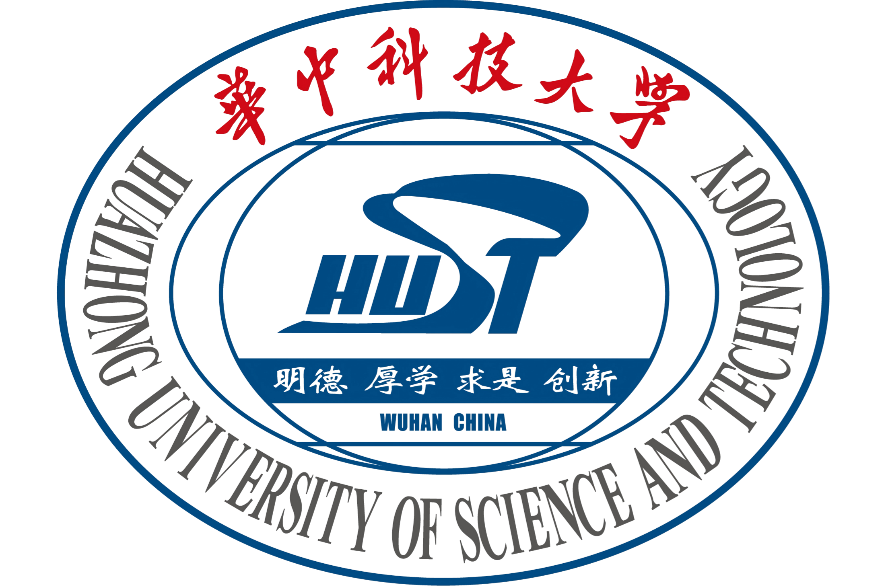

About Me
My name is Chenlong Wang (王臣龙), a final-year undergraduate student in the School of Computer Science and Technology at Huazhong University of Science and Technology (HUST). I began my research journey while working with Prof. Yao Wan at HUST, and join his undergraduate research team, ONE Lab. After that, I have collaborated with Prof. Tianyi Zhou at UMD. At present, I have joined the CCVL Lab at JHU as an on-site intern, supervised by Jieneng Chen.
I am currently seeking a Ph.D position in Machine Learning for Fall 2026.
My research interests lie in the intersection of Multimodal Intelligence and Spatial Intelligence, especially on Multi Modality, Spatial Reasoning, Representation Learning, and World Modeling.
Here is my CV. Please feel free to contact me!
You can use this section to briefly introduce your background, research interests, and current affiliations. Keep it concise and personal.
Download my CV (replace this link with your resume)
Education

Huazhong University of Science and Technology
B.S. in Computer Science and Technology, supervised by Prof. Yao Wan
2022.9 - 2026.6 (Expected)
Experience
CCVL Lab at Johns Hopkins University
Research Intern
Advisor: Dr. Jieneng Chen
2025.10 - Present
Tianyi Zhou's Lab at University of Maryland, College Park
Research Intern
Advisor: Prof. Tianyi Zhou
2025.3 - 2025.11
ONE Lab at Huazhong University of Science and Technology
Research Intern
Advisor: Prof. Yao Wan
2022.9 - 2025.11